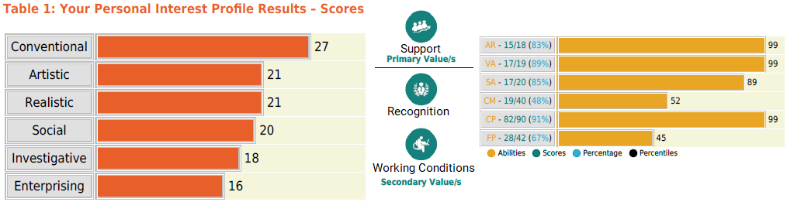

John Angelo Soriano
I am Angelo, a Communicable Computer Science junior. I'm very eager to embrace the latest trends and innovations in technology.
In the upcoming break, I will create more projects to improve my web development skills and my resume. Please message me if you have an app idea, it is very welcome.
Project Manager Application
Manage contracts, dues, and property maintenance of leased properties.
Reddit Clone
Create posts, add comments, and vote for the front page.
Family Tree Chatbot
Add family relationships and ask bot questions about the input.
Sokoban Bot
Automatically solve popular block pushing game. Works on easy-medium sokoban problems.
About

Going through the SAS3000 subject, I learned a lot about how career preparation. First, I took tests that told me the things where I can be my best self. I then learned that I have an eye for details, and a knack for repetitive tasks and going into things hands-on. I also had the privilege of being able to talk to people in the industry and learn many things from them.
Because I struggle with juggling my academic workload, I am not able to do what is expected of a computer science student when compared to others. I see a lot of people being able to expose themselves through hack-athon contests and solve problems that are much more complex than what is taught from school. SAS3000 reminded me that the soft skills are as important as the computer knowledge. In fact, many recruiters from the career talks say that your ability to talk and write to the people in an office is more telling about your ability compared to your diploma or grade.
Through our activities, I learned that I was not yet ready to do a lot of things that are expected in the corporate world. I need to do more interviews, write more emails, talk to more people, and most importantly, learn more about my field and what I can do.